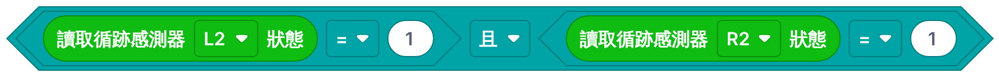
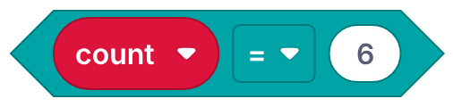
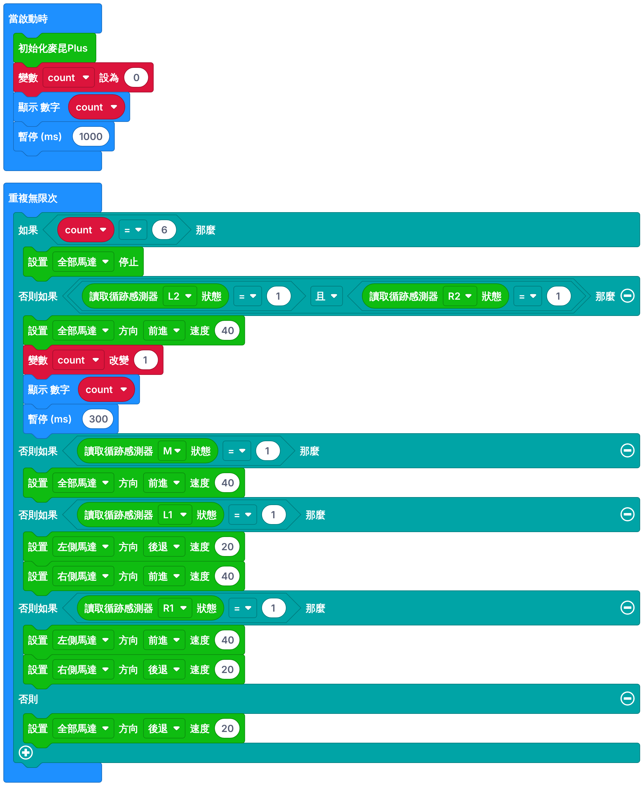

開始之前
1–2 人一組，每組用一部電腦、交一份報告。兩人一組的話，在「組員二」填另一位同學。
- 看懂地圖，找出難點：十字路口、U 形彎、FINISH 停車。
- 用 L2、R2 和變數 count 數橫線，設計「到 FINISH 自動停車」的流程圖及程式。
- 測試、觀察、修改，直至小車由 START 走到 FINISH 並自動停車。
滿分 50 分：看地圖 5、設計流程圖 10、測試記錄 10、老師驗收 25（圓滿完成 25／部分完成 15／未完成 5）。
看地圖：找出難點
5 分這是專題用的地圖。小車由 START 出發，沿黑線走到 FINISH。用手指沿黑線走一次，數一數。
新工具：用 L2、R2 數橫線
小車怎樣知道自己到了 FINISH？答案是數橫線。
- 黑線只有約 2.5 cm 闊，但 L2 和 R2 相距約 9 cm。平時巡線時，L2、R2 都在黑線外面 → 讀到 0。
- 只有經過橫線（十字路口或 FINISH）時，L2 和 R2 會同時讀到 1。
- 每經過一條橫線，就把變數 count 加 1。5 個十字路口 ＋ FINISH ＝ 第 6 條 → 停車！
今次會用到的新積木
| 積木 | 在哪裏找 | 用來做什麼 |
|---|---|---|
| 變數 | 開始時，count 由 0 開始數 | |
 | 邏輯（且）＋ 麥昆Plus | L2 和 R2 都是 1 ＝ 見到橫線 |
| 變數 | count 加 1（數多一條） | |
| 基本 | 在 micro:bit 顯示數到第幾條，方便你觀察 | |
 | 邏輯（＝）＋ 變數 | 數夠 6 條了嗎？ |
設計：完成程式的流程圖
10 分下面是專題程式的流程圖。虛線框內（M、L1、R1）是第四堂已做好的巡線部分；上半部要你設計：把卡拖到空格（或先按卡，再按空格），再按「檢查答案」。
砌程式、下載、測試
1打開第四堂的程式
- 開啟 makecode.microbit.org，打開第四堂的專案（已有 M、L1、R1 巡線部分）。如果要開新專案（名稱：
班別_學號_finish），先按「擴展」，按下面的「複製」，在搜尋欄按 Ctrl＋V 貼上，按 Enter，選 maqueenPlusV2。 - 建立變數 count，在「當啟動時」加「變數 count 設為 0」。
- 照你的流程圖，在「如果」積木按 ⊕ 加多兩格「否則如果」，放在 M 的前面。
2校準、下載、放車
校準 → 下載 → 把小車放在 START 後面的直路上，黑線在車底正中。L2、R2 要越過 START 橫線（車頭再向前推一點），否則一開始就會數多 1。
3看 micro:bit 的數字
每過一條橫線，數字應該加 1：1、2、3、4、5，到 FINISH 顯示 6 並停車。數字不對，就看下一節的記錄表提示。
💡 真的做不到？按這裏看參考程式
先自己試！參考程式用 ③ 轉彎；顯示數字之後暫停 300 ms，讓小車衝過橫線，避免同一條線數兩次。

測試記錄
10 分每試一次填一行，最後一欄會告訴你下一次改什麼。至少記錄 3 次。
轉彎方法：① 慢快＝一邊慢、一邊快；② 停行＝一邊停、一邊行；③ 退進＝一邊後退、一邊前進。「最後數字」＝小車停下時 micro:bit 顯示的數字。
出了問題？
| 現象 | 檢查 |
|---|---|
| 一開始已顯示 1 | 放車時 L2、R2 壓住了 START 橫線：車頭向前推一點 |
| 數字一次跳 2（例：3 → 5） | 同一條線數了兩次：顯示數字後的暫停加長 |
| 到了 FINISH 不停車，數字是 5 | L2、R2 未同時見到 FINISH 橫線：放車要正；請老師檢查 FINISH 橫線夠不夠長 |
| 在十字路口轉錯路 | 次序：count ＝ 6 → L2 且 R2 → M → L1 → R1 |
| U 形彎衝出黑線 | 改用 ② 或 ③；或直行減 10 |
老師驗收
25 分完成（或已盡力）後，請老師來看一次，由 START 走到 FINISH。
挑戰（做得快的組別）
不脫線、自動停車之餘，最快幾秒由 START 走到 FINISH？用下面的計時器：小車起步按「開始」，停在 FINISH 按「停止」。
評鑑（不計分）
你們的設計哪裏做得好？遇到什麼問題、怎樣解決？如果地圖多一個十字路口，程式要改哪裏？
成績及交功課
每組下載一份成績報告（兩人一組時檔名有兩個名字），上傳到 Google Classroom／eClass。